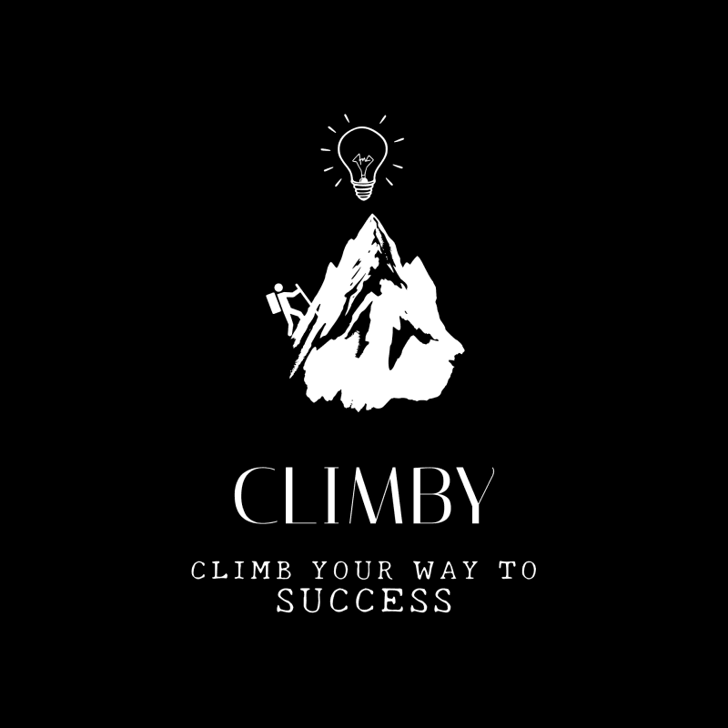

Зарежда камерата…
Постави страницата така, че да се вижда цялата. Скенерът намира ръбовете и я изправя автоматично — ако не успее, ползва цялата снимка, без да спира работата ти.

Зарежда камерата…
Постави страницата така, че да се вижда цялата. Скенерът намира ръбовете и я изправя автоматично — ако не успее, ползва цялата снимка, без да спира работата ти.
Нямаш акаунт? Регистрирай се
Вече имаш акаунт? Влез
Няма добавени задачи още — добави първата отгоре.
Още нямаш довършени задачи — довърши нещо от чеклиста и ще се появи тук.
Включи превключвателя отгоре, за да пробваш. Изцяло по избор — много ученици предпочитат да учат без камера, и това е напълно наред.
Подготвям камерата…
Сесията тече — работи спокойно, ще преброя вместо теб.